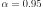
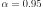

Directional Simulation¶
Using the probability distribution of a random vector  ,
we seek to evaluate the following probability:
,
we seek to evaluate the following probability:
Here, is a random vector,  a
deterministic vector,
a
deterministic vector,  the function known as
“limit state function” which enables the definition of the event
.
the function known as
“limit state function” which enables the definition of the event
.
The directional simulation method is an accelerated sampling method. It
implies a preliminary iso-probabilistic transformation, as for FORM and SORM methods;
however, it remains based on sampling and is thus not an approximation method.
In the transformed space, the (transformed) uncertain variables  are
independent standard Gaussian variables (mean equal to zero and standard
deviation equal to 1).
are
independent standard Gaussian variables (mean equal to zero and standard
deviation equal to 1).
Roughly speaking, each simulation of the directional simulation
algorithm is made of three steps. For the  iteration, these steps are the following:
iteration, these steps are the following:
- Let . A
point
 is drawn randomly on according to an
uniform distribution.
is drawn randomly on according to an
uniform distribution. - In the direction starting from the origin and passing through
, solutions of the equation
(i.e. limits of
 ) are
searched. The set of values of that belong to
is deduced for these solutions: it is a subset
.
) are
searched. The set of values of that belong to
is deduced for these solutions: it is a subset
. - Then, one calculates the probability
. By property of
independent standard variable,
 is a random
variable distributed according to a chi-square distribution, which
makes the computation effortless.
is a random
variable distributed according to a chi-square distribution, which
makes the computation effortless.
Finally, the estimate of the probability  after
after  simulations is the following:
simulations is the following:
The following figure illustrates the principle of an iteration in dimension 2.
The Central Limit Theorem enables the difference between the estimated
value and the sought value to be controlled by means of a confidence
interval (if N is sufficiently large, typically > a few dozens
even if there is now way to say for sure if the asymptotic behaviour is
reached). For a probability  strictly between 0 and 1
chosen by the user, one can, for example, be sure with a confidence
, that the true value of is between
and calculated
analytically from simple formulae. To illustrate, for :
strictly between 0 and 1
chosen by the user, one can, for example, be sure with a confidence
, that the true value of is between
and calculated
analytically from simple formulae. To illustrate, for :
where denotes the empirical standard deviation of the sample .
In practice the Directional Sampling simulation requires the choice of:
a Root Strategy :
- RiskyAndFast: for each direction, we check whether there is a sign change of the standard limit state function between the maximum distant point (at distance MaximumDistance from the center of the standard space) and the center of the standard space.In case of sign change, we research one root in the segment [origin, maximum distant point] with the selected non linear solver.As soon as founded, the segment [root, infinity point] is considered within the failure space.
- MediumSafe: for each direction, we go along the direction by step of length stepSize from the origin to the maximum distant point (at distance MaximumDistance from the center of the standard space) and we check whether there is a sign change on each segment so formed.At the first sign change, we research one root in the concerned segment with the selected non linear solver. Then, the segment [root, maximum distant point] is considered within the failure space.If stepSize is small enough, this strategy guarantees us to find the root which is the nearest from the origin.
- SafeAndSlow : for each direction, we go along the direction by step of length stepSize from the origin to the maximum distant point(at distance MaximumDistance from the center of the standard space) and we check whether there is a sign change on each segment so formed.We go until the maximum distant point. Then, for all the segments where we detected the presence of a root, we research the root with the selected non linear solver. We evaluate the contribution to the failure probability of each segment.If stepSize is small enough, this strategy guarantees us to find all the roots in the direction and the contribution of this direction to the failure probability is precisely evaluated.
a Non Linear Solver:
- Bisection: bisection algorithm,
- Secant: based on the evaluation of a segment between the two last iterated points,
- Brent: mix of Bisection, Secant and inverse quadratic interpolation.
and a Sampling Strategy:
RandomDirection: we generate some points on the sphere unity according to the uniform distribution and we consider both opposite directions so formed.
- OrthogonalDirection: this strategy is parameterized by , where
 is the dimension of
the input random vector . We generate one direct
ortho-normalized basis uniformly
distributed in the set of direct orthonormal bases. We consider
all the normalized linear combinations of
is the dimension of
the input random vector . We generate one direct
ortho-normalized basis uniformly
distributed in the set of direct orthonormal bases. We consider
all the normalized linear combinations of  vectors
chosen within the vectors of the basis, where the
coefficients of the linear combinations are in
. This generates new vectors
. We sample according to all the directions defined
by the vectors .If
vectors
chosen within the vectors of the basis, where the
coefficients of the linear combinations are in
. This generates new vectors
. We sample according to all the directions defined
by the vectors .If , we consider all the axes of the standard space.
, we consider all the axes of the standard space.
API:
Examples:
References:
- Robert C.P., Casella G. (2004). Monte-Carlo Statistical Methods, Springer, ISBN 0-387-21239-6, 2nd ed.
- Rubinstein R.Y. (1981). Simulation and The Monte-Carlo methods, John Wiley & Sons
- Bjerager, P. (1988). “Probability integration by Directional Simulation”. Journal of Engineering Mechanics, vol. 114, no. 8